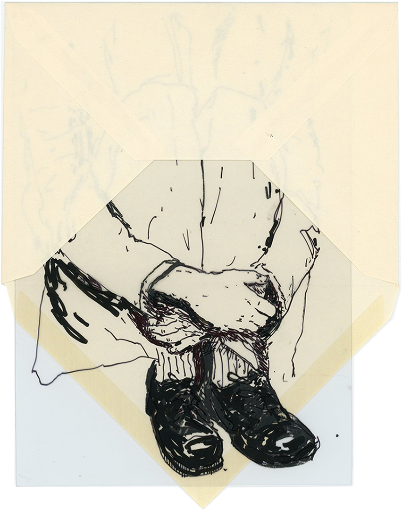
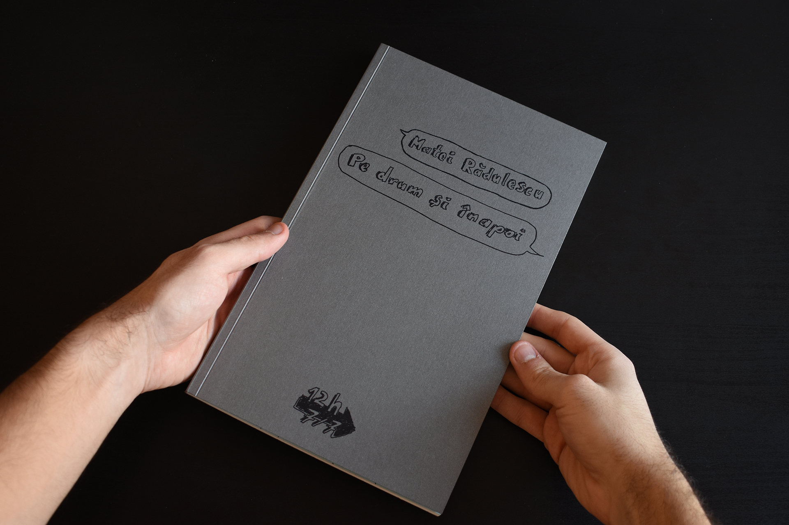
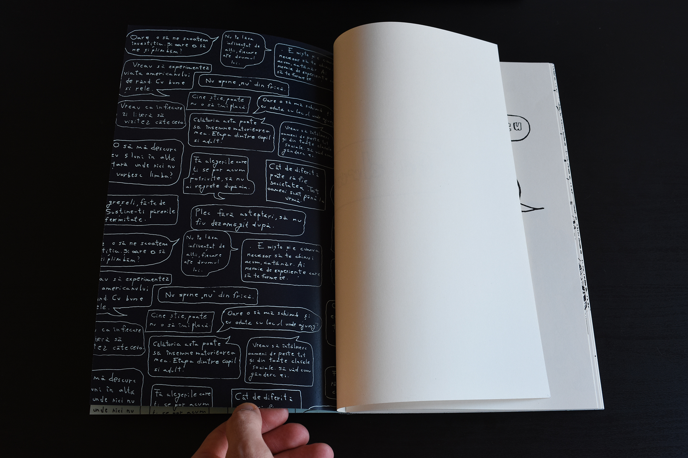
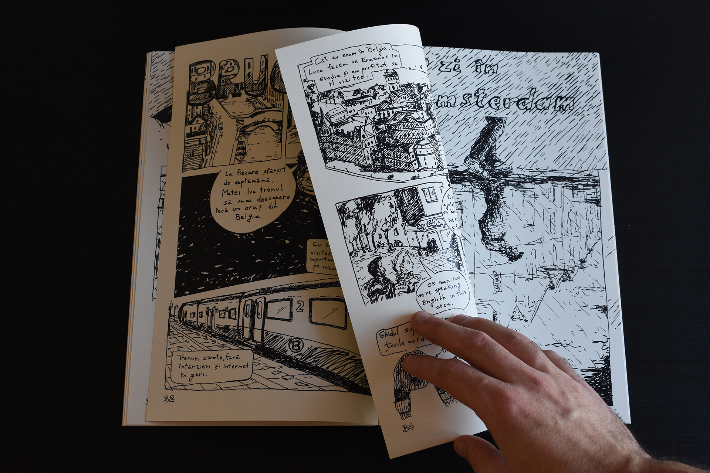

Grafician și artist cu un interes declarat pentru grafica de carte și ilustrație. Absolvent de Master în 2026 al Departamentului Grafică al Universității Naționale de Arte București și Licență în 2023 în cadrul aceluiași departament cu preocupări în zona de bandă desenată, grafică editorială și ilustrație.
În activitatea sa prezentă se ocupă cu crearea de imagini ce însoțesc texte editoriale, crează bandă desenată sau vizualuri pe care le integrează în publicații și cărți de artist și realizează materiale de grafică tipărite și pentru formate digitale.
Visual artist with a strong focus on book design and illustration. He earned a Master's degree in 2026 and a Bachelor's degree in 2023 from the Graphic Arts Department at the National University of Arts in Bucharest, specializing in visual communication, illustration and editorial design.
Currently, his work involves creating illustration for editorial projects, producing personal visuals and comics integrated into self-made publications & books, and developing graphic materials for both print and digital formats.
Contact
mateiradulescu1@gmail.com
Instagram
@matei.radulescu
Interviews
Propagarta (Romanian)
Empower Artists (Romanian)
Dissolved Magazine (Romanian)







